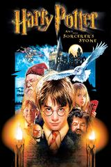

哈利波特－神秘的魔法石
《哈利波特－神秘的魔法石》（英語：Harry Potter and the Philosopher's Stone，又名 Harry Potter and the Sorcerer's Stone[3]）是一部於2001年上映，英美合拍的奇幻電影，劇情改編自暢銷作家J·K·羅琳所著，同名奇幻小說《哈利波特》第一冊《哈利波特－神秘的魔法石》，且為「哈利波特系列電影」中的第一部作品。電影為克里斯·哥倫布執導，史提夫·克羅夫斯編劇，丹尼爾·雷德克里夫飾演主角哈利波特，其他演員包括艾瑪·華森、魯伯特·葛林特、羅比·科特瑞恩以及李察·哈里斯等。
在小說就創出不可思議的佳績之前，資方代理華納兄弟很快以相當低的價錢購買電影版權。這部電影是在利維斯登工作室製作，並於2001年發行；第二至七集也陸續拍成電影。本片創造了全球超過九億五千多萬元的票房，並且獲得奧斯卡金像獎的三項提名。
為了保有小說和電影的完整文化，J·K·羅琳堅持所有的演員都必須是英國人。除了德文·莫雷（飾演西莫·非尼干）和李察·哈里斯（飾演鄧不利多教授）是愛爾蘭演員，以及美國人佐依·沃納梅克（飾演胡奇夫人）。